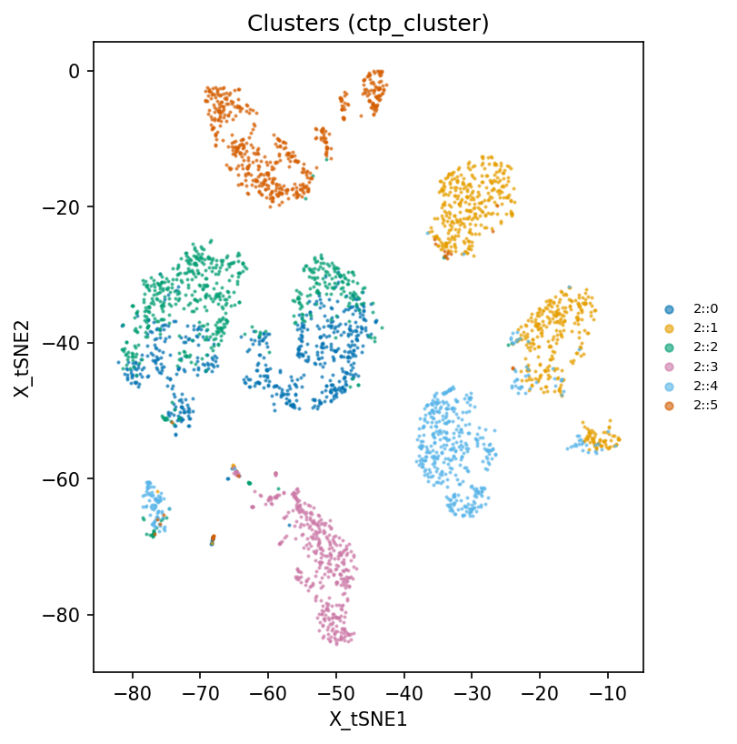
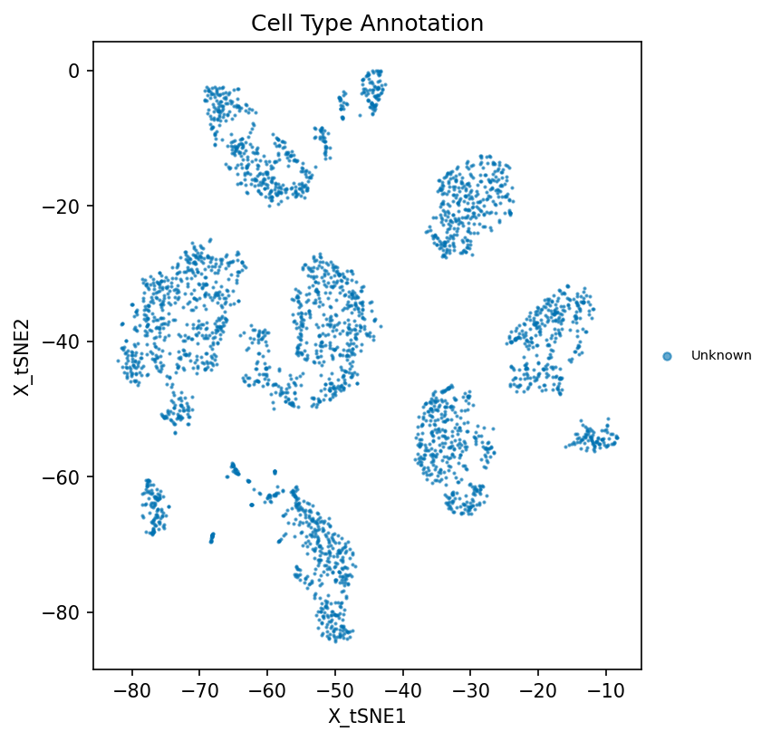
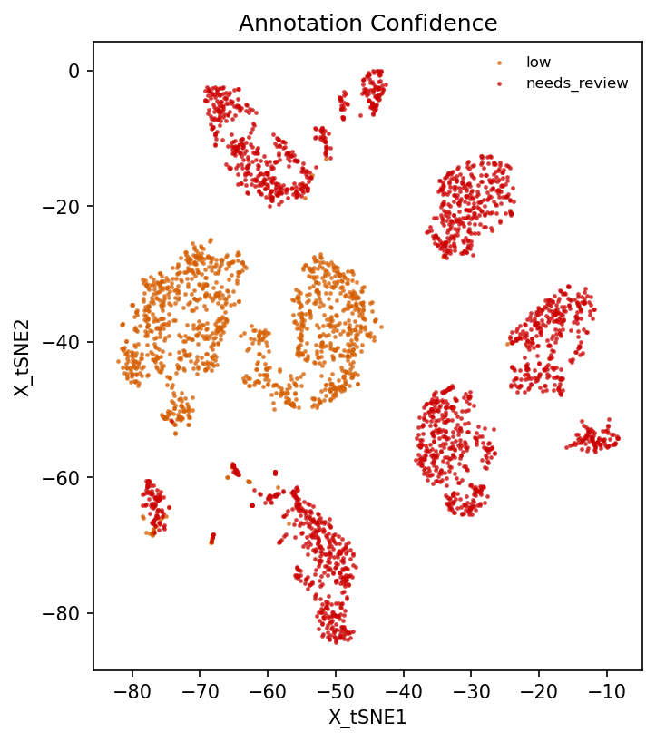
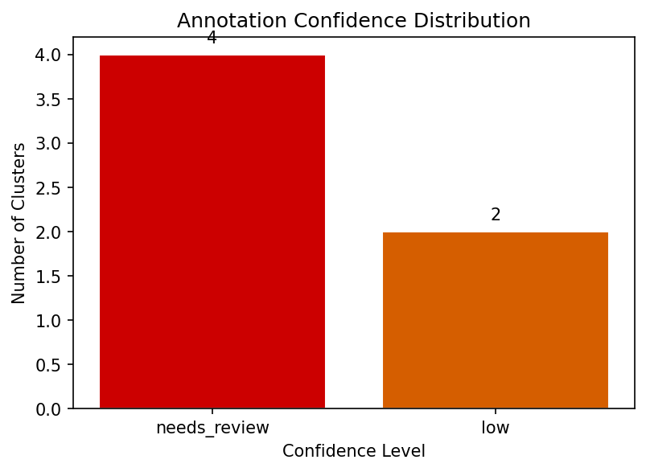
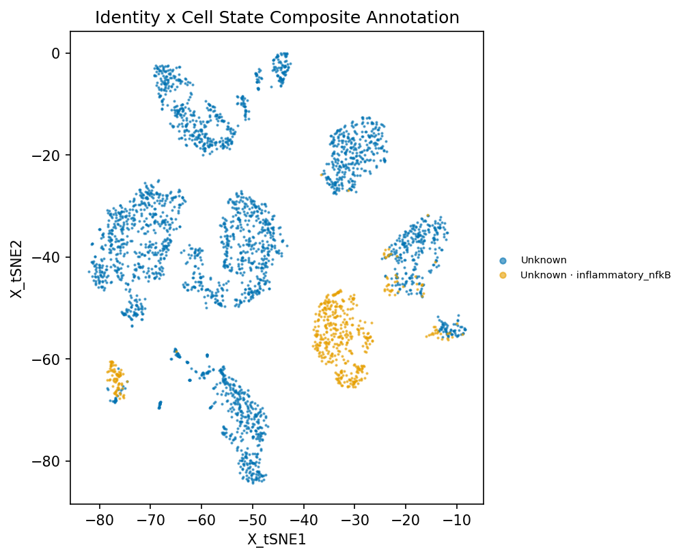
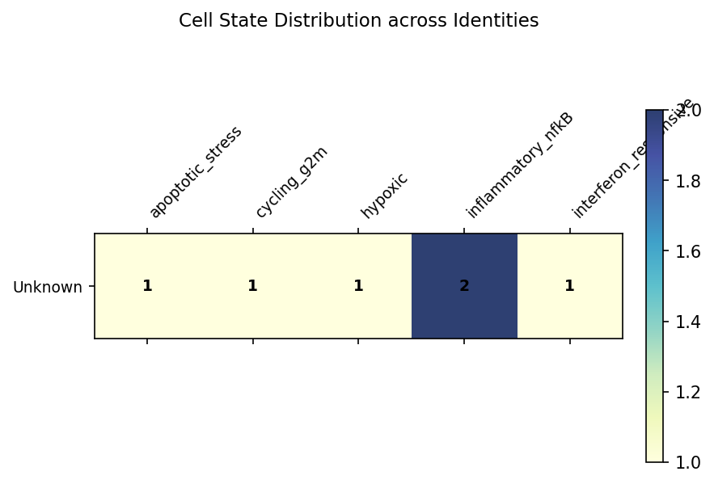

Generated: 2026-08-09T16:03:48.930174+00:00 | CellTypePilot v0.3.0 | MKG: mkg-2026.08.1
6 cluster(s) reviewed: 0 passed critic checks, 6 flagged for review. Confidence distribution: 4 needs_review, 2 low. Flag breakdown: AGGREGATE_PROVENANCE_ONLY ×6, PARTIAL_EVIDENCE ×4, PARTIAL_DE_SUPPORT ×2, POSSIBLE_DOUBLET ×2, LOW_DE_SUPPORT ×2, ENSEMBLE_MILD_DISAGREEMENT ×2. Flagged clusters need human adjudication before publication; unflagged clusters carry full marker evidence in evidence_table.csv.
Species: human | Tissue: lung | Cluster key: ctp_cluster
| Cluster | Final Cell Type | Candidate | Identity Decision | CL ID | State Candidate | State Decision | Novelty/OOD | Evidence Score | Review Level | Critic | Evidence Summary |
|---|---|---|---|---|---|---|---|---|---|---|---|
| 2::0 | Unknown | Basal cell | abstain: PARTIAL_DE_SUPPORT; PARTIAL_EVIDENCE | interferon_responsive | hypothesis (0.700) | not_assessed (0.000) | 0.380 | low | AGGREGATE_PROVENANCE_ONLY; PARTIAL_EVIDE | Cluster 2::0 → Unknown (candidate: Basal cell) [LOW] FLAGGED (AGGREGATE_PROVENANCE_ONLY; PARTIAL_EVIDENCE; PARTIAL_DE_SUPPORT) | Evidence: marker overlap 20%, score 0.38 | Action: Treat as a draft; verify marker edges against stable records or primary sources. Review; may be correct for rare/transitional states. Partial directional DE support; review before labeling. | |
| 2::1 | Unknown | Ciliated cell | abstain: POSSIBLE_DOUBLET | hypoxic | hypothesis (0.767) | not_assessed (0.000) | 0.869 | needs_review | AGGREGATE_PROVENANCE_ONLY; POSSIBLE_DOUB | Cluster 2::1 → Unknown (candidate: Ciliated cell) [NEEDS_REVIEW] FLAGGED (AGGREGATE_PROVENANCE_ONLY; POSSIBLE_DOUBLET) | Evidence: marker overlap 80%, score 0.87 | Action: Treat as a draft; verify marker edges against stable records or primary sources. Sub-cluster or mark as doublet. | |
| 2::2 | Unknown | Basal cell | abstain: PARTIAL_DE_SUPPORT; PARTIAL_EVIDENCE | inflammatory_nfkB | hypothesis (0.125) | not_assessed (0.000) | 0.378 | low | AGGREGATE_PROVENANCE_ONLY; PARTIAL_EVIDE | Cluster 2::2 → Unknown (candidate: Basal cell) [LOW] FLAGGED (AGGREGATE_PROVENANCE_ONLY; PARTIAL_EVIDENCE; PARTIAL_DE_SUPPORT) | Evidence: marker overlap 20%, score 0.38 | Action: Treat as a draft; verify marker edges against stable records or primary sources. Review; may be correct for rare/transitional states. Partial directional DE support; review before labeling. | |
| 2::3 | Unknown | Ciliated cell | abstain: LOW_DE_SUPPORT; PARTIAL_EVIDENCE | cycling_g2m | hypothesis (0.388) | not_assessed (0.000) | 0.257 | needs_review | AGGREGATE_PROVENANCE_ONLY; PARTIAL_EVIDE | Cluster 2::3 → Unknown (candidate: Ciliated cell) [NEEDS_REVIEW] FLAGGED (AGGREGATE_PROVENANCE_ONLY; PARTIAL_EVIDENCE; LOW_DE_SUPPORT; ENSEMBLE_MILD_DISAGREEMENT) | Evidence: marker overlap 0%, score 0.26 | Action: Treat as a draft; verify marker edges against stable records or primary sources. Review; may be correct for rare/transitional states. Insufficient directional DE support; keep as Unknown. Minor method disagreement; usually acceptable. | |
| 2::4 | Unknown | Alveolar type 2 cell | abstain: POSSIBLE_DOUBLET | inflammatory_nfkB | supported (0.865) | not_assessed (0.000) | 0.882 | needs_review | AGGREGATE_PROVENANCE_ONLY; POSSIBLE_DOUB | Cluster 2::4 → Unknown (candidate: Alveolar type 2 cell) [NEEDS_REVIEW] FLAGGED (AGGREGATE_PROVENANCE_ONLY; POSSIBLE_DOUBLET) | Evidence: marker overlap 80%, score 0.88 | Action: Treat as a draft; verify marker edges against stable records or primary sources. Sub-cluster or mark as doublet. | |
| 2::5 | Unknown | Alveolar type 1 cell | abstain: LOW_DE_SUPPORT; PARTIAL_EVIDENCE | apoptotic_stress | hypothesis (0.125) | not_assessed (0.000) | 0.352 | needs_review | AGGREGATE_PROVENANCE_ONLY; PARTIAL_EVIDE | Cluster 2::5 → Unknown (candidate: Alveolar type 1 cell) [NEEDS_REVIEW] FLAGGED (AGGREGATE_PROVENANCE_ONLY; PARTIAL_EVIDENCE; LOW_DE_SUPPORT; ENSEMBLE_MILD_DISAGREEMENT) | Evidence: marker overlap 0%, score 0.35 | Action: Treat as a draft; verify marker edges against stable records or primary sources. Review; may be correct for rare/transitional states. Insufficient directional DE support; keep as Unknown. Minor method disagreement; usually acceptable. |






Decision: abstain (PARTIAL_DE_SUPPORT; PARTIAL_EVIDENCE)
State: interferon_responsive — hypothesis
State evidence: support=4/7; expressed=57%; missing=1; silent=2
Summary: Cluster 2::0 → Unknown (candidate: Basal cell) [LOW] FLAGGED (AGGREGATE_PROVENANCE_ONLY; PARTIAL_EVIDENCE; PARTIAL_DE_SUPPORT) | Evidence: marker overlap 20%, score 0.38 | Action: Treat as a draft; verify marker edges against stable records or primary sources. Review; may be correct for rare/transitional states. Partial directional DE support; review before labeling.
Flags: AGGREGATE_PROVENANCE_ONLY; PARTIAL_EVIDENCE; PARTIAL_DE_SUPPORT
Evidence: Coverage: 1/5 (20%) expected markers expressed; 0 missing from matrix; 4 present but silent | DE support: 20% of expected markers | All 2 negative markers appropriately absent | No doublet signal detected | Ensemble: marker=0.39, ref=0.37, source=both
Notes: Marker relations cite database-level sources but have not been verified against a stable database record or primary-source evidence locator; Moderate marker coverage (20%) — consider manual review; Partial directional DE support; candidate requires review
Decision: abstain (POSSIBLE_DOUBLET)
State: hypoxic — hypothesis
State evidence: support=4/6; expressed=67%; missing=0; silent=2
Summary: Cluster 2::1 → Unknown (candidate: Ciliated cell) [NEEDS_REVIEW] FLAGGED (AGGREGATE_PROVENANCE_ONLY; POSSIBLE_DOUBLET) | Evidence: marker overlap 80%, score 0.87 | Action: Treat as a draft; verify marker edges against stable records or primary sources. Sub-cluster or mark as doublet.
Flags: AGGREGATE_PROVENANCE_ONLY; POSSIBLE_DOUBLET
Evidence: Coverage: 4/5 (80%) expected markers expressed; 1 missing from matrix; 0 present but silent | All 2 negative markers appropriately absent | Cross-lineage co-expression of Ciliated cell (80%) and Club cell (67%) markers | Ensemble: marker=0.84, ref=0.94, source=both
Notes: Marker relations cite database-level sources but have not been verified against a stable database record or primary-source evidence locator; Two distinct lineage signatures co-expressed — possible doublet or transitional state. Consider sub-clustering.
Decision: abstain (PARTIAL_DE_SUPPORT; PARTIAL_EVIDENCE)
State: inflammatory_nfkB — hypothesis
State evidence: support=0/6; expressed=50%; missing=0; silent=3
Summary: Cluster 2::2 → Unknown (candidate: Basal cell) [LOW] FLAGGED (AGGREGATE_PROVENANCE_ONLY; PARTIAL_EVIDENCE; PARTIAL_DE_SUPPORT) | Evidence: marker overlap 20%, score 0.38 | Action: Treat as a draft; verify marker edges against stable records or primary sources. Review; may be correct for rare/transitional states. Partial directional DE support; review before labeling.
Flags: AGGREGATE_PROVENANCE_ONLY; PARTIAL_EVIDENCE; PARTIAL_DE_SUPPORT
Evidence: Coverage: 1/5 (20%) expected markers expressed; 0 missing from matrix; 4 present but silent | DE support: 20% of expected markers | All 2 negative markers appropriately absent | No doublet signal detected | Ensemble: marker=0.38, ref=0.37, source=both
Notes: Marker relations cite database-level sources but have not been verified against a stable database record or primary-source evidence locator; Moderate marker coverage (20%) — consider manual review; Partial directional DE support; candidate requires review
Decision: abstain (LOW_DE_SUPPORT; PARTIAL_EVIDENCE)
State: cycling_g2m — hypothesis
State evidence: support=1/8; expressed=12%; missing=0; silent=7
Summary: Cluster 2::3 → Unknown (candidate: Ciliated cell) [NEEDS_REVIEW] FLAGGED (AGGREGATE_PROVENANCE_ONLY; PARTIAL_EVIDENCE; LOW_DE_SUPPORT; ENSEMBLE_MILD_DISAGREEMENT) | Evidence: marker overlap 0%, score 0.26 | Action: Treat as a draft; verify marker edges against stable records or primary sources. Review; may be correct for rare/transitional states. Insufficient directional DE support; keep as Unknown. Minor method disagreement; usually acceptable.
Flags: AGGREGATE_PROVENANCE_ONLY; PARTIAL_EVIDENCE; LOW_DE_SUPPORT; ENSEMBLE_MILD_DISAGREEMENT
Evidence: Coverage: 1/5 (20%) expected markers expressed; 1 missing from matrix; 3 present but silent | DE support: 0% of expected markers | All 2 negative markers appropriately absent | No doublet signal detected | Ensemble: marker=0.04, ref=0.35, source=both
Notes: Marker relations cite database-level sources but have not been verified against a stable database record or primary-source evidence locator; Moderate marker coverage (20%) — consider manual review; Too few expected markers pass direction, logFC, FDR, and expression gates; Mild disagreement between methods (gap=0.31)
Decision: abstain (POSSIBLE_DOUBLET)
State: inflammatory_nfkB — supported
State evidence: support=5/6; expressed=83%; missing=0; silent=1
Summary: Cluster 2::4 → Unknown (candidate: Alveolar type 2 cell) [NEEDS_REVIEW] FLAGGED (AGGREGATE_PROVENANCE_ONLY; POSSIBLE_DOUBLET) | Evidence: marker overlap 80%, score 0.88 | Action: Treat as a draft; verify marker edges against stable records or primary sources. Sub-cluster or mark as doublet.
Flags: AGGREGATE_PROVENANCE_ONLY; POSSIBLE_DOUBLET
Evidence: Coverage: 4/5 (80%) expected markers expressed; 1 missing from matrix; 0 present but silent | All 3 negative markers appropriately absent | Cross-lineage co-expression of Alveolar type 2 cell (75%) and Ciliated cell (40%) markers | Ensemble: marker=0.83, ref=0.99, source=both
Notes: Marker relations cite database-level sources but have not been verified against a stable database record or primary-source evidence locator; Two distinct lineage signatures co-expressed — possible doublet or transitional state. Consider sub-clustering.
Decision: abstain (LOW_DE_SUPPORT; PARTIAL_EVIDENCE)
State: apoptotic_stress — hypothesis
State evidence: support=0/6; expressed=50%; missing=0; silent=3
Summary: Cluster 2::5 → Unknown (candidate: Alveolar type 1 cell) [NEEDS_REVIEW] FLAGGED (AGGREGATE_PROVENANCE_ONLY; PARTIAL_EVIDENCE; LOW_DE_SUPPORT; ENSEMBLE_MILD_DISAGREEMENT) | Evidence: marker overlap 0%, score 0.35 | Action: Treat as a draft; verify marker edges against stable records or primary sources. Review; may be correct for rare/transitional states. Insufficient directional DE support; keep as Unknown. Minor method disagreement; usually acceptable.
Flags: AGGREGATE_PROVENANCE_ONLY; PARTIAL_EVIDENCE; LOW_DE_SUPPORT; ENSEMBLE_MILD_DISAGREEMENT
Evidence: Coverage: 1/4 (25%) expected markers expressed; 2 missing from matrix; 1 present but silent | DE support: 0% of expected markers | All 3 negative markers appropriately absent | No doublet signal detected | Ensemble: marker=0.08, ref=0.47, source=both
Notes: Marker relations cite database-level sources but have not been verified against a stable database record or primary-source evidence locator; Moderate marker coverage (25%) — consider manual review; Too few expected markers pass direction, logFC, FDR, and expression gates; Mild disagreement between methods (gap=0.38)